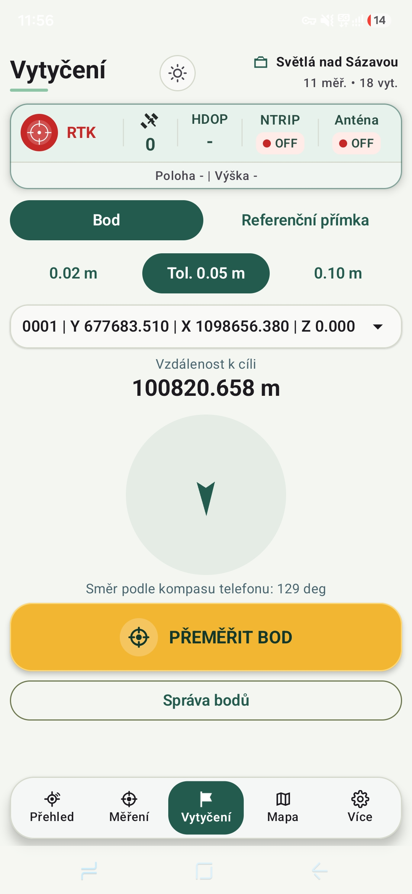
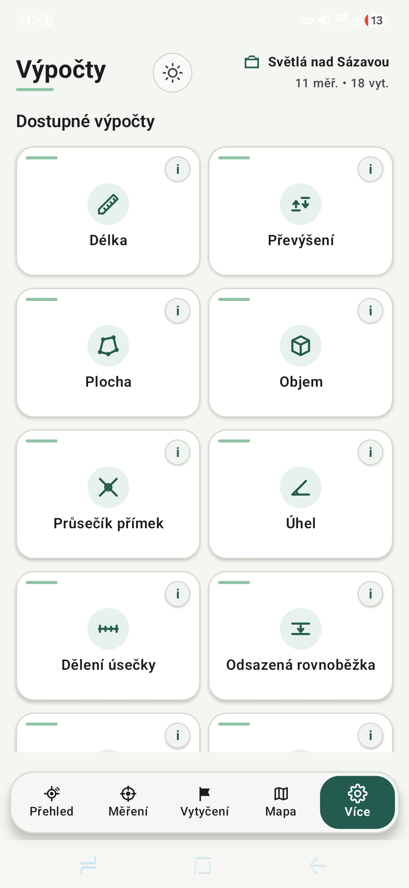

Měření bodů
Ukládejte body s přehledem o přesnosti, kvalitě řešení a aktuální poloze.
GNSS aplikace pro Android
Měření, vytyčování, RTK korekce i práce s mapou v jedné přehledné aplikaci. PointYX spojuje externí GNSS přijímač s vaším telefonem.
Vše potřebné na jednom místě
PointYX je navržený pro rychlou a čitelnou práci venku. Bez přepínání mezi několika aplikacemi.
Ukládejte body s přehledem o přesnosti, kvalitě řešení a aktuální poloze.
Přehledná navigace k bodu s okamžitou informací o směru a vzdálenosti.
Připojení ke korekční službě včetně CZEPOS přímo z aplikace.
Body i podklady vidíte v souvislostech přímo na mapě zakázky.
Praktické geodetické výpočty dostupné kdykoliv přímo v terénu.
Navrženo pro práci venku
Čisté rozhraní ukazuje právě to, co potřebujete. Velké ovládací prvky a dobře čitelné hodnoty usnadňují práci i v náročných podmínkách.


Pro profesionály v terénu
Měření, vytyčování a kontrola bodů.
Rychlá kontrola polohy přímo na stavbě.
Sběr terénních dat a jejich snadný export.
PointYX je ve vývoji
Hledáme uživatele z praxe, kteří nám pomohou aplikaci doladit pro skutečnou práci v terénu.
info@pointyx.com →